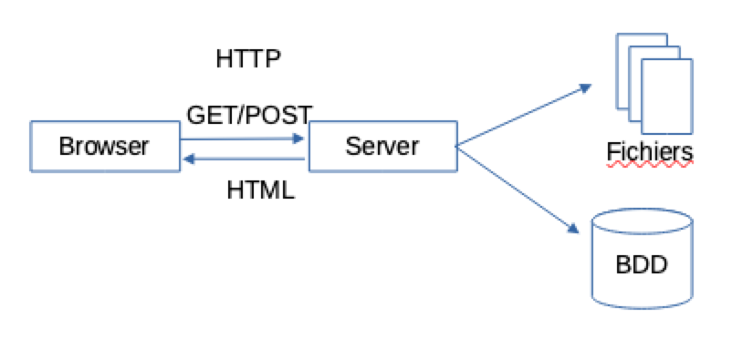
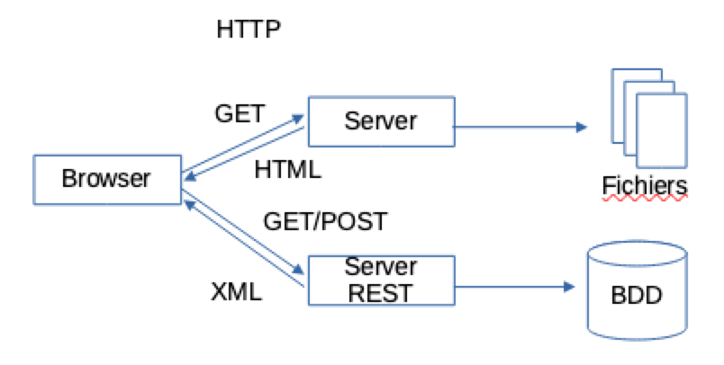
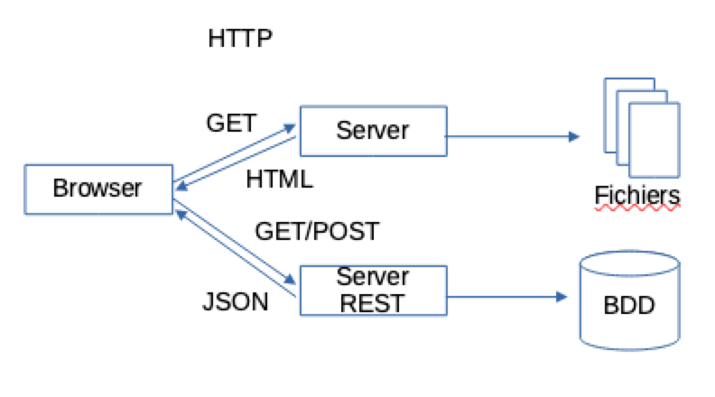
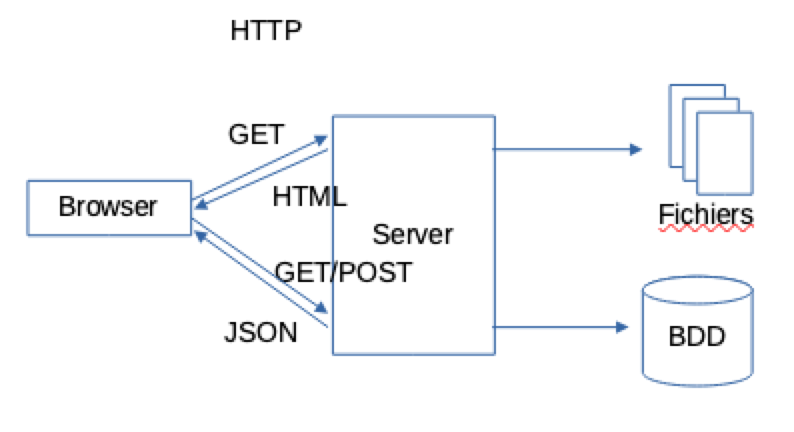

Remi Forax
Historiquement, un client (browser) et un serveur discute par HTTP page par page
mais l'interactivité est limitée
Pour Asynchronous JavaScript And XML. On sépare la page et le contenu dynamique de la page. Le contenu dynamique est demandé en utilisant JavaScript.
mais on envoie des morceaux d'arbre DOM, beurk !
Douglas Crockford invente JSON un format d'échange simple indépendant d'un langage en particulier
utilise un sous-ensemble de la syntaxe des objets de JavaScript
C'est le même serveur qui envoie les fichiers statiques et répond aux appels effectuer en JavaScript. L'API est au format REST.
“Representational state transfer (REST) or RESTful Web services are one way of providing interoperability between computer systems on the Internet. REST-compliant Web services allow requesting systems to access and manipulate textual representations of Web resources using a uniform and predefined set of stateless operations.”
source: Wikipedia.org - Representational state transfer
On réutilise le protocole HTTP pour faire
les appels à des services sur un serveur distant
On va utiliser une addresse de base api.foo.bar.com
Pour accéder au utilisateur, on va utiliser l'URI users,
donc pour créer, lister, mettre à jour, supprimer des utilisateurs,
on utilisera l'adresse http://api.foo.bar.com/users
| GET | PUT | POST | DELETE | |
| /users/ | liste les utilisateurs | remplace les utilisateurs | crée un nouvel utilisateur | détruit les utilisateurs |
| /users/bob | récupère les propriétés d'un utilisateur | met à jour un utilisateur | supprime un utilisateur |
“JSON (JavaScript Object Notation) is an open-standard format that uses human-readable text to transmit data objects consisting of attribute–value pairs. It is the most common data format used for asynchronous browser/server communication.”
source: Wikipedia.org - JSON
“JSON (Notation objet JavaScript) est un format standard ouvert qui utilise un texte lisible par un humain pour transmettre des données objets sous forme de couples attribut/valeur. C'est le format d'échange de données le plus couramment utilisé pour la communication asynchrone entre browser et serveur.”
source : Wikipedia.org - JSON
Format d'échange
Permet d'encoder des objets/tableaux JavaScript au format textuel JSON
Permet de décoder en JavaScript une chaine de caractères comme un objet JSON
“Ajax (also AJAX; short for asynchronous JavaScript and XML) is a set of web development techniques using many web technologies on the client-side to create asynchronous Web applications.”
source: Wikipedia.org - AJAX
“Ajax (aussi AJAX; acronyme pour JavaScript asynchrone et XML) est un ensemble de techniques de développement web utilisant plusieurs technologies web côté client dans le but de créer des applications Web asynchrones.”
source : Wikipedia.org - AJAX
AJAX, permet en Javascript de faire des requêtes à un serveur en enregistrant une fonction qui sera exécutée plus tard, lorsque les données du serveur seront disponibles.
Le fait de faire le traitement plus tard lorsque les données seront présentes est appelé traitement asynchrone
Dans la réalité, on utilise plutôt JSON que XML comme format de transport, mais on garde le nom AJAX (au lieu de AJAJ).
JSON est non structuré et non validable facilement donc il est utilisé pour les transferts de petites données (en kilo)
XML est plus lourd mais structuré et validable, il est utilisé pour le transfert de données plus importantes (en méga)
fetch(uri, option?) effectue un appel HTTP asynchrone.
option est un objet qui indique la méthode HTTP utilisée
(GET, PUT, POST, DELETE).
let response = await fetch("/api/users", { method: "???" });
Fait un appel asynchrone à une API REST
avec la méthode GET
let response = await fetch("api/users", { method: "GET" })
if (!response.ok) {
throw new Error(response.statusText);
}
fetch renvoie une réponse même si la réponse est Not Found,
il faut checker si la réponse est ok.
Pour un PUT, on veut envoyer du JSON. On doit indiquer le Content-Type correspondant à JSON dans le header. On envoie le JSON sous forme de string dans le body.
let object = ...
let response = await fetch("/api/users", {
method: "PUT",
headers: {"Content-Type": "application/json"},
body: JSON.stringify(object)
});
if (!response.ok) {
throw new Error(response.statusText);
}
Attention à ne pas oublier l'appel à JSON.stringify() !
Un POST marche comme PUT
let object = ...
let response = await fetch("/api/users", {
method: "POST",
headers: {"Content-Type": "application/json"},
body: JSON.stringify(object)
});
if (!response.ok) {
throw new Error(response.statusText);
}
On peut spécifier l'id que l'on veut supprimer dans l'URI
let object = ...
let response = await fetch("/api/users/id", {
method: "DELETE"
});
if (!response.ok) {
throw new Error(response.statusText);
}
Le parsing de JSON (le retour de response.json()) est aussi asynchrone, il faut un autre await !
let response = await fetch("images/js-object/demo.json"); // GET
if (!response.ok) {
throw new Error(response.statusText);
}
let json = await response.json();
Si l'on fait un
Même chose pour les fonctions flèches.
await ne marche qu'à l'intérieur d'une fonction async
C'est l'objet qui est utilisé en interne par async/await
Il représente la promesse d'une valeur future
Permet d'accéder à la valeur de la promesse une fois celle-ci connue
Permet d'accéder l'erreur de la promesse une fois celle-ci connue
Async met la valeur de retour de la fonction dans une promesse si ce n'est pas déjà le cas
Async met les exceptions qui sortent de la fonction dans une promesse
Avant 2017, on utilisait fetch() avec l'API des promesses
then() et catch() permettent d'installer des closures qui seront appelées si la valeur est résolue ou s'il y a une erreur
await attend une promesse et met le code qui suit dans un then en tant que closure et re-propage les exceptions
await ne permet pas de faire plusieurs requêtes en parallèle
les fetchs sont fait les uns après les autres !
Calcul en parallèle, le résultat est une promesse contenant le tableau des valeurs
La promesse résultante est calculée dès qu'une des promesses a fini
Appel Asynchrone en utilisant un HttpXMLRequest
let ajax = new XMLHttpRequest();
ajax.onreadystatechange = () => {
if (ajax.readyState != 4) { return; }
if(ajax.status != 200) {
// TODO NOT OK ! (ajax.status)
} else {
// TODO OK (ajax.responseText)
}
};
ajax.open('GET', 'http://api.foo.bar.com/users/bob', true);
ajax.send();
fetch() est plus simple ... et mieux
On peut faire en sorte de voir un HttpXMLRequest comme une promesse
express.js est une bibliothèque qui permet de créer des points d'entrée (endpoint)
REST en JavaScript.
Elle utilise le "serveur" node.js
let express = require('express');
let app = express();
app.get('/users', (req, res) => {
res.send('Hello World!');
});
app.listen(3000);
On crée un endpoint sur l'URI /users puis on écoute les clients sur le port TCP 3000
on utilise les verbes get, post, put, delete (en minuscules)
app.post('/users', (req, res) => {
...
})
app.put('/users', (req, res) => {
...
})
app.delete('/users', (req, res) => {
...
})
la propriété params de l'objet requête permet d'obtenir les paramètres nommés extraits de l'URI
app.get('/users/:id', (req, res) => {
console.log('user id ' + req.params.id);
})
Les paramètres nommés commencent par ':' dans l'URI
Les cookies sont stockés par le client et envoyés à chaque requête
app.get('/users/:id', (req, res) => {
console.log(req.cookies);
})
cookies contient tous les cookies valides pour l'URI
cookies est un objet dont les clés sont les noms des cookies
status permet d'indiquer le code HTTP de la réponse
app.get('/users/:id', (req, res) => {
res.status(404).send('Oops');
})
send permet d'envoyer une réponse textuelle
app.get('/users/:id', (req, res) => {
res.send('OK !');
})
Le Content-Length est la longeur de la chaine de caractères
Si le status n'est pas positionné, la valeur est 200
sendFile permet d'envoyer un fichier en réponse
app.get('/users/:id', (req, res) => {
res.sendFile('/absolute/path/to/ok.png');
})
Le Content-Type dépend de l'extension
le Content-Length est la taille du fichier.
json permet d'envoyer une réponse au format JSON
app.get('/users/:id', (req, res) => {
let id = req.params.id;
res.json('{ user: ' + id + ' }');
})
Le Content-Type est application/json
Sur l'objet réponse, set et append permettent d'ajouter des entêtes de réponse.
app.get('/users/:id', (req, res) => {
res.set('Set-Cookie', 'foo=bar; Path=/; HttpOnly');
})
HttpOnly veut dire pas dans les requêtes AJAX !
type permet d'indiquer le Content-Type.
app.get('/users/:id', (req, res) => {
res.type('text/html').send('Ok');
})